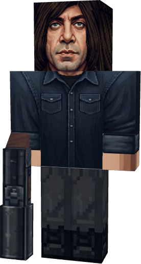
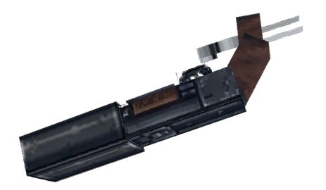

ГОСТЬ ZITRAKSMODE
Вы его
не звали.
Он пока просто смотрит.


На обочине кто-то стоит. Можно подойти. Можно просто остаться на месте.

Ноль злости.
И личная охота.
«Откуда ты?» — не безобидный small talk. Пять секунд лицом к лицу, и он оказывается дальше. Тихая охота привязана к тебе, даже если шкала настороженности осталась на нуле.
Если просто промолчать?
Каждое «...» добавляет 34 к настороженности. Третье молчание доводит её до 100 и запускает охоту. А «Извините, обознался» просто закрывает диалог: это не команда удалить Чигура из мира.
А если не вступать в разговор вообще?
Десять секунд неподвижности рядом, в пределах 32 блоков: он сам подходит к игроку для игры в монету. Перед выбором идут пять секунд реплики. Сам бросок занимает две секунды. Решение — честные 50/50, один раз на этого Чигура.
Почему сон — плохая идея?
Во время личной ночной охоты взаимодействие с кроватью запускает казнь: обе части кровати ломаются, Чигур появляется перед игроком, и начинается короткая сцена. «Первая встреча» при этом выдаётся за приближение к живому Чигуру на пять блоков, не просто за его появление.
Когда он появляется и когда исчезает?
Окно ночного появления — тики 13 000–23 000, дистанция 12–20 блоков. В этой версии пересчёт сохранённого шанса даёт новому игроку 40% при первой проверке; после неудачи следующая проверка доходит до 100%. Долгое отсутствие видимости — 120 секунд — ведёт к исчезновению. Сцены выше начинаются уже со встречи, а не изображают генерацию мира.
Он тоже может
не вернуться.
80 здоровья. 6 брони. Если Чигур погибает, после него остаётся дробовик. Не сувенир с бесконечными патронами.

Здесь разыгрывается только получение трофея.
Бой с мобом вики не симулирует.
Это твой трофейный дробовик, не оружие NPC. Попробуй все шесть патронов.
У трофея — 300 выстрелов, 6 патронов в барабане и обязательные 10 секунд перезарядки. У самого Чигура другой режим: пустой барабан пополнится лишь следующей ночью. Манекен здесь без брони; тир не выдаёт себя за реальный бой.
Что останется
после этой ночи.
Достижения повторяют названия и условия мода. XP ниже — очки исследования этой вики, не обещание игрового опыта.